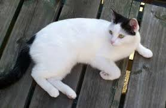

Welcome to my first webpage
Hello this is my first web page
I am Mae and this is milescam. Welcome
I made it with my dad, he showed me what to do and I did it
MilesCam
Miles is a cat that comes into our garden more than his own. We made this to see when he comes into our garden. Then we know, and it tells us what time he comes as well.
These pictures are of Miles around our neighbourhood

Made 15 October 2016
by Mae.